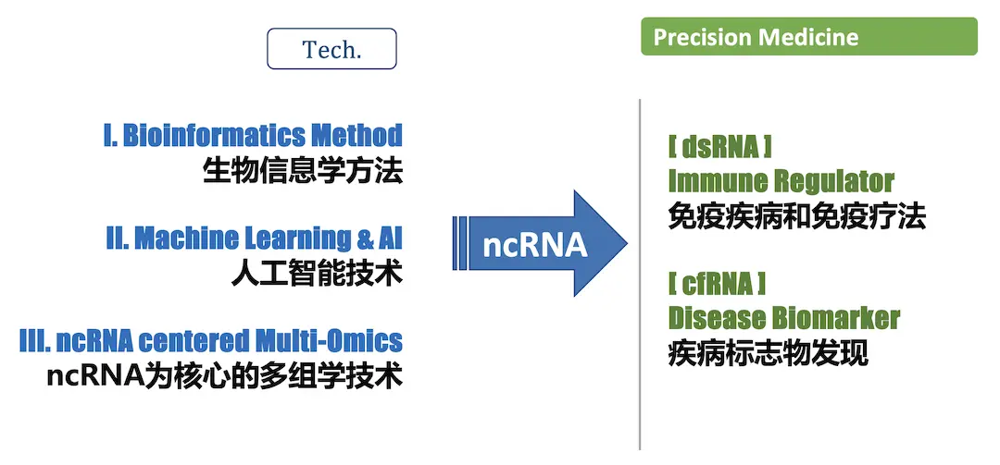
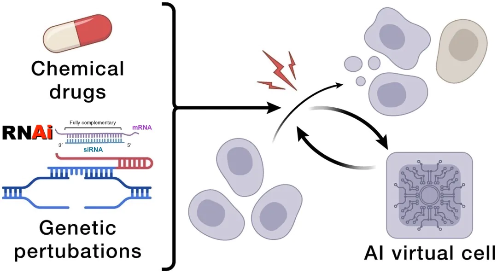
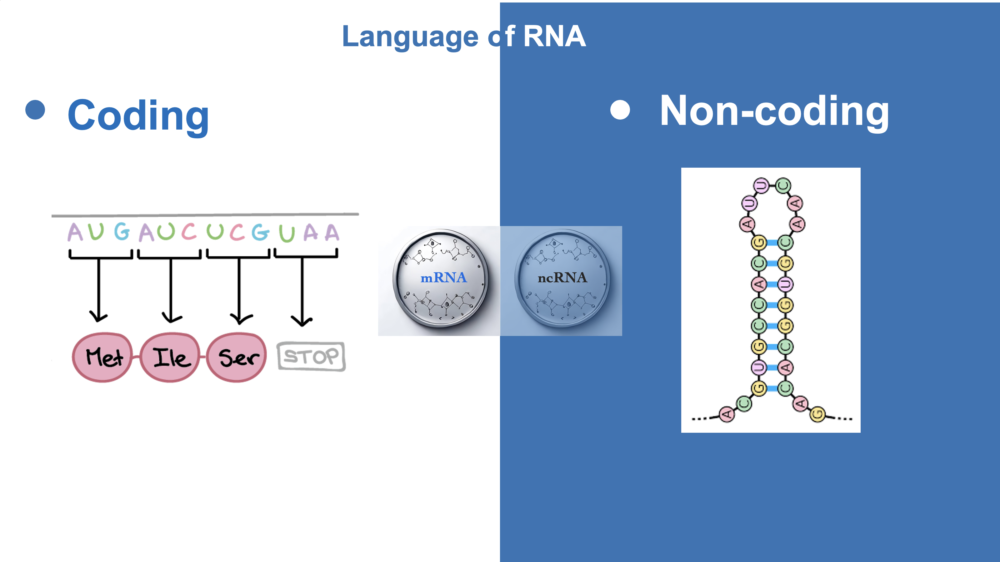
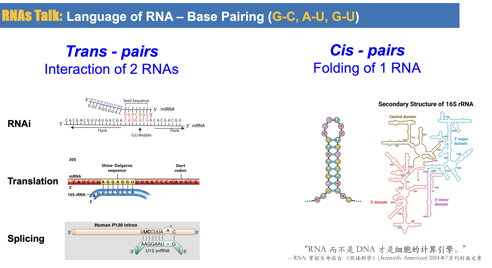
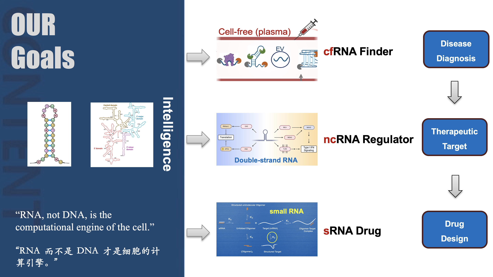
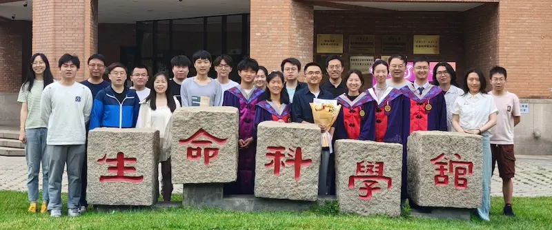
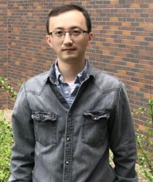
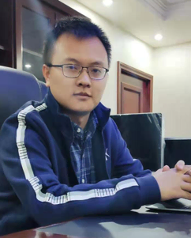
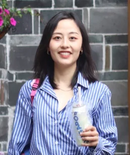

Lu Lab Introduction
Our mission: We are dedicated to understanding and curing human diseases, and knowing and improving ourselves.
理解生命 • 影响医学 我们相信，这种使命感以及为此付出的实践和努力，将帮助我们理解和治疗人类疾病，并最终认识和提高我们自己。
鲁志 · Zhi John Lu
清华大学 生命科学学院 • 副教授，博士生导师
国家优秀青年基金获得者，青年长江学者
鲁志
Our lab focuses on advancing innovative bioinformatics technologies and practicing evidence-based precision medicine for complex diseases like cancer and autoimmune diseases.
• Unraveling the complexities of the noncoding genome.
• Designing next-generation diagnostics & therapeutics using Bioinformatics and Artificial Intelligence.
我们实验室致力于发展生物信息学技术，并探索其在癌症、自身免疫疾病等复杂疾病的精准诊疗上的具体实践。我们利用非编码 RNA 为核心的多组学数据，结合人工智能，研究生命的语言是如何被编码在结构化的核酸分子之中，以及它们是如何在一个生命体系中相互交流、彼此调控。
The Next 10 Years: Predictive & Programmable RNA Systems
Vision & Strategy (suggested by chatGPT) →
RNA-mediated sensing and control of biological state → from descriptive to programmable and predictive systems biology — integrating AI techniques, RNA languages and therapeutics.
State
状态如何形成和编码？
How is biological state formed and coded in RNA?
Dynamics
状态如何转变？
How does state transition over time and space?
Control
状态如何被调控？
How can we control state?
Why RNA is a Unique Interface
- Reflects & Perturbs: RNA acts as both a system sensor and active modifier of biological networks.
- Dynamic Bridge: Core operational bridge between genotype, environment, and cellular phenotype.
- Multi-modal Utility: Simultaneous real-time sensing, precise intervention, and cellular monitoring.
- AI-Driven Modeling: Its digital, programmable nature makes it uniquely compatible with deep learning.
和蛋白质相比，RNA 更“AI-friendly”，更有可能成为连接人工智能与生命科学的关键桥梁。
RNA 特别适合三件事：
sensing + intervention + monitoring
“RNA 而不是 DNA 才是细胞的计算引擎。”
“RNA, not DNA, is the computational engine of the cell.”— Scientific American, July 2024
Closed-Loop Dynamic Framework
Cell-free RNA 负责感知 · RNA Drug 负责干预与控制 · AI 负责推断与预测
你未来最关键的战略：“干湿实验共生关系”，不是找人帮验证，而是真正联合设计问题。 -- chatGPT
Sensing
Real-time tracking of cfRNA signals to monitor current state.
Inference
AI networks parse signals to map internal transition trajectories.
Perturbation
Programmable RNA agents intervene to modify molecular trajectories.
Feedback
Continuous evaluation forms closed-loop homeostatic control.
Design → Synthesis → Assay → Feedback → Re-design
RNA Finder · RNA Talk
Two complementary programs sharing one long-term question: the RNA-mediated sensing and control of biological state.
Lab Projects →
A. RNA Finder — Bioinfo-Driven Precision Medicine
We aim to unravel the complexities of the noncoding genome, i.e., noncoding RNA (ncRNA). Particularly, we build AI tools to decode cell-free RNA (cfRNA) and microbial RNA (mbRNA) signals from liquid biopsies for early disease detection and patient stratification.
- cfPeak — AI identification of cfRNA fragments for diagnosis & prognosis
- cfOmics — Integration of multi-omics data for precision medicine
- Cell-of-origin deconvolution, pre-disease ecosystem signals, fragmentomics, cfRNA foundation model

B. RNA Talk — AI-Driven RNA Modeling & Drug Design
We model RNA sequence, structure, and interactions to design siRNA, ASO, and small-molecule for RNA Therapeutics, and to build an AI Virtual Cell (AIVC) for programmable biology.
- RNAsmol — AI design of ligands targeting RNAs
- OligoFormer — AI design of siRNAs targeting RNAs
- RNA interactome, perturbation-aware models, dynamic delivery prediction, cell-state programmable RNA therapeutics

Subgroups @ Lu Lab
RNAfinder
- A1 — discoverying novel noncoding RNAs in human & microbes
- A2 [MED] — AI for Precision Medicine based on cfRNA & MultiOmics
- A2 [Structure] — AI for Ribozyme Design
RNAtalk
- B1 [RNAi] — AIVC & drug design based on RNAi
- B2 [RNAdrug] — AI for small molecule drug design targeting RNA
真正有壁垒的是：独特数据 + 高质量实验反馈 + 长期问题，而不是模型本身。
— chatGPT
The Language of RNA
Why RNA sits at the center of modern biology and AI-driven medicine.
Coding and Non-coding RNAs
The central dogma has expanded: ~75% of the human genome is transcribed, yet only ~2% encodes proteins. The rest — non-coding RNAs — are now recognized as regulatory, structural, and catalytic actors.
- ~20,000 human lncRNA loci (GENCODE); ~30,000 (FANTOM); likely an order of magnitude more.
- Structured ncRNAs: miRNA, ribozymes, riboswitches, snRNAs, snoRNAs, tRNA, rRNA.

RNAs Talk
RNA communicates through base pairing: a single RNA folds into cis-pairs; two RNAs form trans-pairs. These interactions underlie RNA interference, translation control, and splicing regulation.
- Cis-pairs: folding of one RNA
- Trans-pairs: interaction of two RNAs → RNAi, translation, splicing

RNA Interference
2006 Nobel Prize: Fire & Mello for discovery of RNA interference by double-stranded RNA.
2024 Nobel Prize: Ambros & Ruvkun for discovery of microRNAs regulating gene activity.
Immune Regulator
Double-stranded RNAs (dsRNAs) act as immune regulators, linking RNA structure to innate immunity and therapeutic opportunity.
Disease Biomarker
Cell-free RNAs (cfRNAs) in blood and other fluids provide non-invasive, real-time windows into disease state and treatment response.
Bioinformatics · RNA Intelligence
Three technical pillars connect sensing and intervention through code and theory.
I. Bioinformatics Methods
Algorithms and databases for RNA annotation, structure prediction, and interaction mapping.
II. Machine Learning & AI
Foundation models and deep learning that tokenize RNA information at sequence and/or structure levels.
III. ncRNA-centered Multi-Omics
Integration of genomics, transcriptomics, epigenomics, proteomics, and metabolomics around non-coding RNA.
Modeling RNA: Sequence vs. Structure
Modern RNA modeling operates at two tokenization levels: RNA-Seq captures sequence and expression; RNA-Structure captures base pairing and interactions. Deep learning now bridges both.
From HMMs for gene finding, to stochastic context-free grammars for secondary structure, to Transformers for 3D structure — bioinformatics has always mirrored linguistics, because genomes are the language of life.

Using RNA: Applications of RNA Intelligence
We model RNA to decode cfRNA and design sRNA/ligand for RNA Therapeutics, and to build an AI Virtual Cell (AIVC) for programmable biology.
- cfRNA Finder — Disease biomarker discovery
- ncRNA Regulator — Therapeutic target identification
- sRNA Drug — Drug design targeting RNA

Multiple Views of RNA
1. Genomic View
~75% of the human genome is transcribed.
2. Sequence View
Splicing, editing, modification, degradation.
3. Structure View
Tertiary structure and cross-talk of base pairs.
4. Regulation View
dsRNA and immune response.
5. Localization View
Cellular and extracellular RNA.
RNA Variations: Methods & Tools
| Variation | Sequencing Methods | Bioinformatics Tools |
|---|---|---|
| Abundance | RNA-seq | DESeq2, EdgeR, Cufflinks |
| Splicing | RNA-seq | rMATS, TOPHAT/Cufflinks |
| Editing | RNA-seq | GIREMI, REDItools, SPRINT |
| APA | RNA-seq / PAT-seq | DaPars, APAtrap |
| Translation | Ribo-seq | RiboWave, RiboTaper, ORFscore |
| Degradation | Degradome-Seq, cfRNA-seq | sPARTA, cfPeak |
| Modification | m6A-seq, MeRIP-seq, miCLIP | m6aViewer, MeRIP-PF |
| Structure | icSHAPE, SHAPE-map, DMS-seq | RNAstructure, RNAfold, RME |
| RNA-protein interaction | HITS-CLIP, PAR-CLIP, iCLIP, eCLIP | Piranha, PARalyzer, CIMS; POSTAR/CLIPdb |
Build Questions · Build People · Build a Field
培养科学家，而不仅仅是发表论文。平衡毕业压力和大的科研目标。共同成长的科研共同体。

Training Philosophy
Two types of bioinformatics studies:
- Data Problems — representation, storage/retrieval, analysis methods (statistics, AI, optimization).
- Biology Problems — interpreting sequences, predicting structure/function, mining clinical data.
同质化教育 → 差异化教育（因材施教）
Team Work & Balance
Artificial Intelligence — Dry Lab
AI-Driven RNA Modeling
Omics Data — Wet + Dry Labs
Bioinfo-Driven Precision Medicine
“Thank you for your hard working and hard thinking!”
可视化的成长轨迹： 会跑分析 → 会解释结果 → 会质疑数据 → 会定义问题 → 会建立理论
Alumni Highlights



Software · Databases · Publications
发表成果：新型非编码 RNA 的算法工具、数据库网站和医学应用。
Representative Tools
- RNA-Finder — novel non-coding RNA identification
- RNA-Talk — RNA structure and target prediction
- cfPeak — AI identification of cfRNA fragments
- cfOmics — multi-omics integration for diagnosis
- RNAsmol — AI design of RNA-targeting ligands
- OligoFormer — AI design of siRNAs
6 patents · 3 software copyrights
Publications
Lu Lab has published >80 papers in journals including Science, Nature, Cell, PNAS, eLife, Nucleic Acids Research, Genome Biology, Bioinformatics, with >30,000 citations.
All Publications →
Tips, guidance & resources for lab members and visitors.
Guide & Tips
Grad School Survival Guide
- 构思和打磨好的问题；随着新成果涌现，不断重新审视和打磨问题。
- 寻求帮助 — 独自一人完成不会获得额外加分。
- 至少要有两个项目，保持动力和发现机会。
- 三思而后行，睡一觉再回复。
- 学会何时专注，从最不感兴趣的任务开始。
Andrew Gaudet, A grad school survival guide, Science 2015 [Read more]
Get a Coach
Critical thinking and peer review drive scientific progress. The same is true for personal growth. Even the most outstanding people benefit from a coach — someone who provides an external eye, helps identify problems, breaks down behavior, and guides rebuilding.
Want to get great at something? Get a coach!
TED (16:36) [Watch] Bilibili (2:50) [Watch]
Learning Resources
Join Us !
We are always looking for curious, driven scientists who want to work at the intersection of RNA biology, bioinformatics, and artificial intelligence.
lulab1@tsinghua.edu.cn